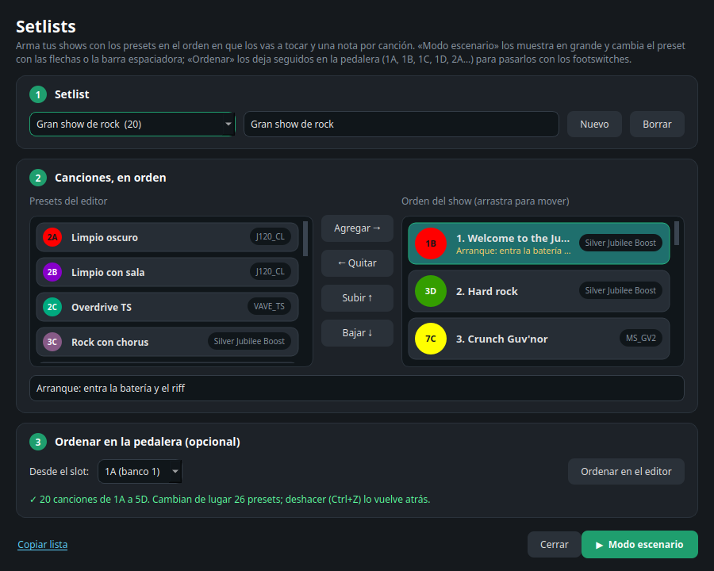
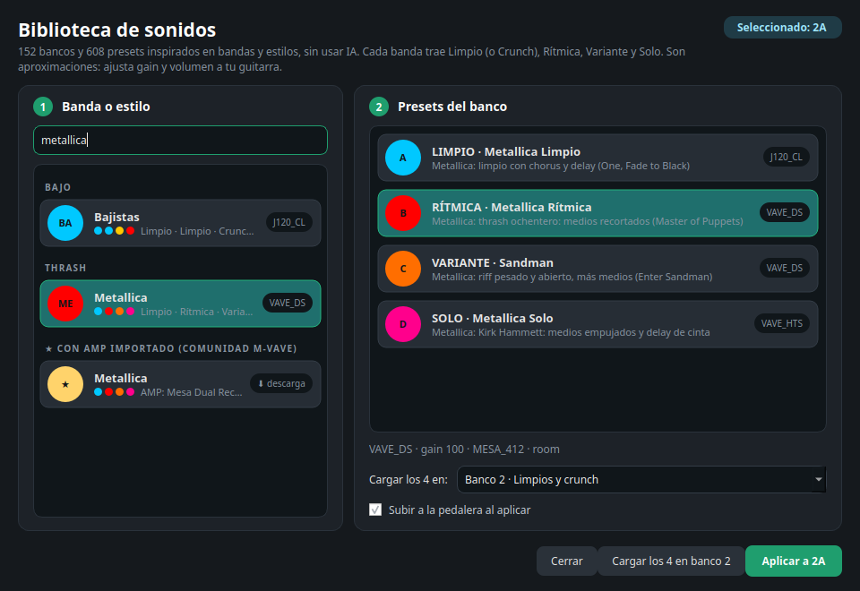

Modo escenario. Pantalla completa con la canción, su slot, el AMP y la nota, sobre un brillo del
color del LED del preset. Las flechas, la barra espaciadora o un pedal pasa-páginas cambian de canción y la
activan en la pedalera.

Setlists. Todos tus shows guardados, con una nota por canción (afinación, capo, tempo) y
sincronizados con Google Drive. «Ordenar» los deja seguidos para pasarlos con los footswitches.

Biblioteca de sonidos. Más de 150 bancos y 600 presets de bandas y estilos, listos para cargar,
y packs con los AMP de la comunidad M-VAVE.
Qué hace
Lee, edita y guarda los 36 presets de la pedalera, con una copia de seguridad antes de cada escritura y
comprobación por relectura.
Nombres para presets y bancos, color del LED, deshacer, copiar y pegar, intercambiar.
Biblioteca de sonidos por banda y estilo, y generación de presets con IA.
Setlists con notas por canción y modo escenario en pantalla completa.
Nube con Google Drive (opcional): los mismos presets en todos tus equipos. La app usa el permiso
drive.file, así que solo ve los archivos que ella misma crea, en la carpeta «Tank-G Control
Center» de tu Drive.